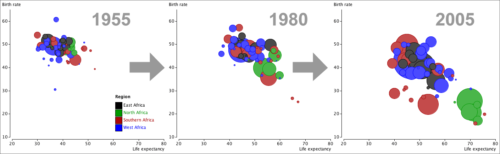

Dynamic scatterplots
Changes over time can be shown on a computer if any graphical display is accompanied by a slider that can dynamically update the display for the data sets in different years. This cannot be demonstrated in a static diagram but a flavour is given below to show the relationship between birth rate and life expectancy in African countries between 1955 and 2005, with circle area proportional to the populations of the countries.
